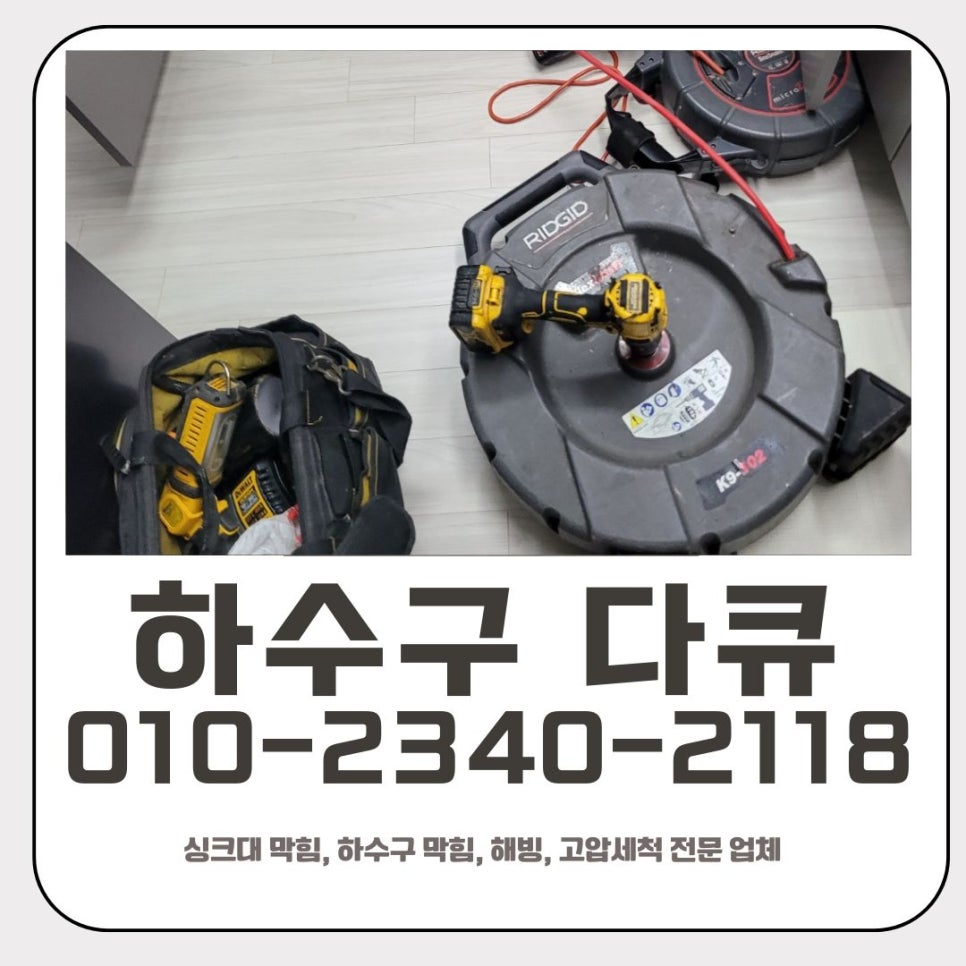
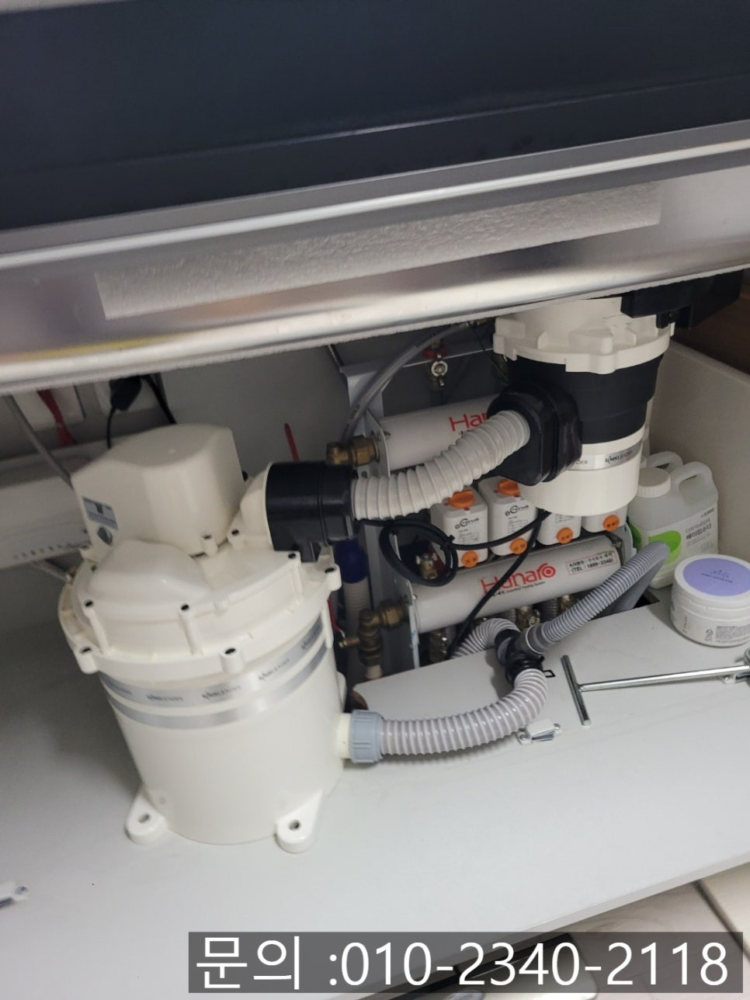
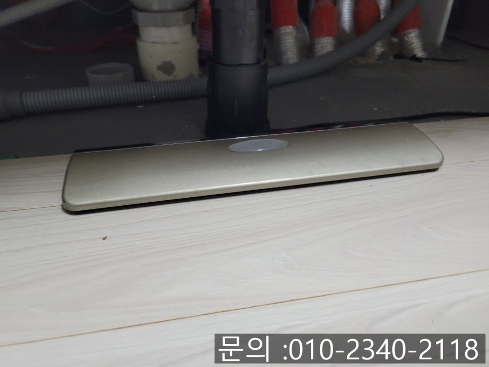
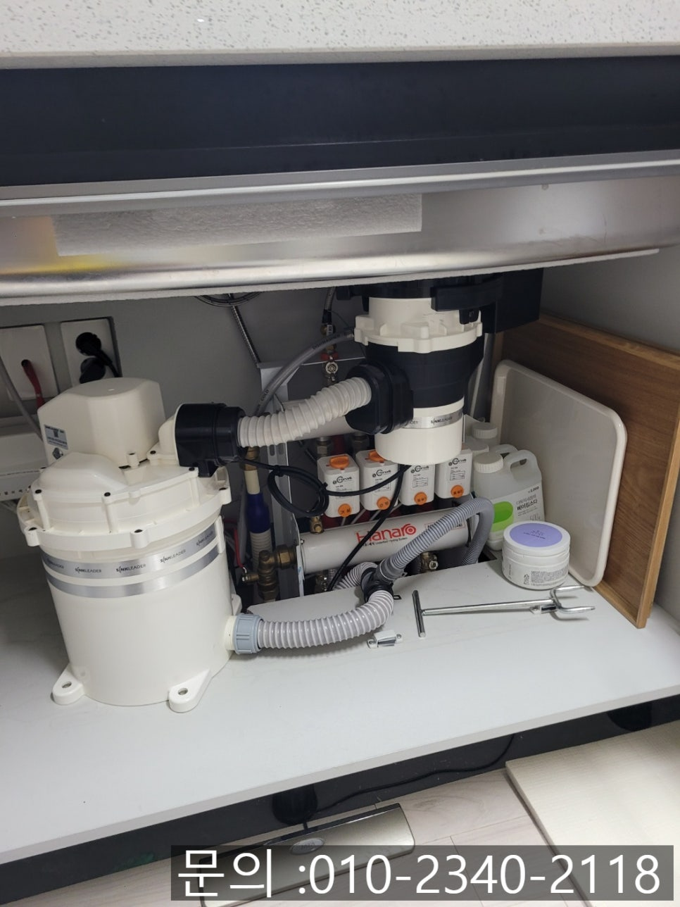
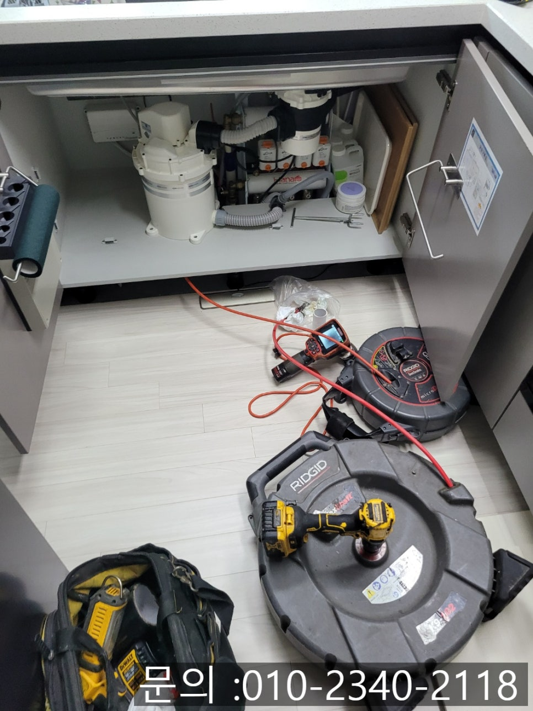
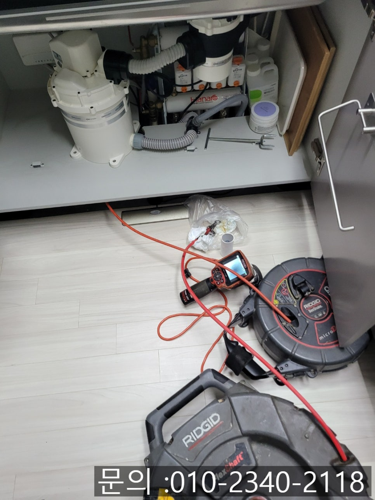
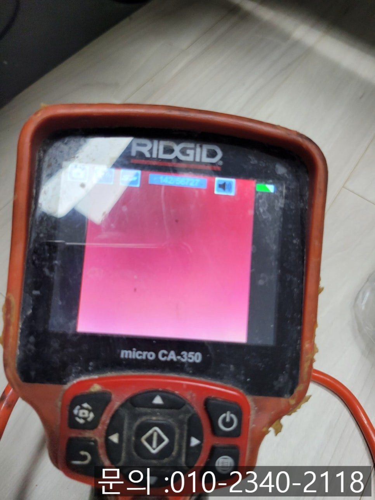

🏠 싱크리더 미생물 처리기 막힘 배관 음식물 찌꺼기 제거 방법 뚫는 업체
용인 싱크대막힘 전문 시공 후기

📋 작업 개요
- 위치: 용인
- 서비스 유형: 싱크대막힘, 하수구막힘, 배관막힘, 역류해결, 뚫는업체, 배관청소
- 작업 일시: 2025. 7. 26. 10:10
- 업체명: 하수구수사대 (010-5615-2118)
🔍 문제 상황
안녕하세요.
배관 음식물 찌꺼기 제거 방법 뚫는 업체 하수구 다큐멘터리입니다.
최근 몇 년 사이 친환경적인 음식물 쓰레기 처리 방식으로 음식물 처리기를 사용하는 가정이 많이 늘고 있는 추세입니다. 평소에는 편리하게 음식물을 분해해 주니 깔끔하고 유용하지만, 사용 환경이나 습관에 따라 뜻밖의 싱크대 막힘 문제가 발생할 수 있다는 점, 알고 계셨나요?

🔎 원인 분석
💡 전문가 진단: 정밀 진단 장비를 사용하여 슬러지의 고착 여부를 판명하고 타격/세척 작업을 실시했습니다.
오늘 소개해 드릴 현장 역시 싱크대 물이 전혀 빠지지 않고 역류가 발생하려고 하는 아찔한 상황이었어요. 고객님께서는 처음엔 단순한 막힘으로 생각하시고, 배수구 클리너 등을 이용하여 뚫어보는 시도를 하셨지만, 상황은 쉽게 개선되지 않았고 결국 하수구 다큐를 찾아 연락을 주게 되셨어요.
고객님과 약속시간을 정하고 신속하게 장비를 챙겨 현장으로 방문 드리게 되었어요. 상황을 살펴보니, 싱크대 물을 내릴 때마다 배수구에서 공기방울과 함께 이물질이 역류하고 있었어요.
싱크대 하부 장에는 역시 싱크리더 음식물 처리기가 설치되어 있었어요. 미생물 우회 배출 방식의 음식물 처리기로, 일반 분쇄해서 2차 처리기로 옮겨지고 거기서 미생물과 만나 분해가 되면서 액상화되어 배출되는 시스템으로 작동합니다.

🔧 작업 과정
싱크리더 미생물 처리기 막힘 원인을 정확하게 파악하기 위해서는 배관 내부 상태를 정확하게 확인하는 것이 우선이었기 때문에, 곧바로 배관 내시경 장비를 이용하여 내부를 살펴보았어요.
카메라로 확인한 배관 안은 처리기로 분해하지 못한 음식물 찌꺼기들이 쌓여있었어요. 미생물 처리기의 경우, 분해 시간이 충분치 않거나 기름기 있는 음식물이나 껍질류를 자주 흘려보내면 배관에 달라붙어 슬러지 화가 되기 쉽다는 단점이 있어요.
배관 음식물 찌꺼기 제거 방법 뚫는 업체 하수구 다큐멘터리는 고객님께 상황을 충분히 안내해 드리고, 해결을 위해 회전식 플렉스 샤프트 장비를 투입하며 청소 작업을 진행하기로 결정하였어요.
샤프트 장비는 장비 끝에 체인처럼 생긴 갈퀴 모양의 노즐이 고속 회전을 하면서 배관 벽에 들러붙은 찌꺼기와 이물질을 갈아내면서 제거해 주는 방식입니다. 배관 내시경으로 내부의 오염도를 체크해가면서 샤프트 장비로 반복하여 제거하는 청소 작업을 진행해 주었어요.
마침내 완전히 이물질들이 제거되고, 배출되어 나온 모습도 확인할 수 있었어요. 싱크대에서 물을 내려보면서 물이 막힘없이 배수가 잘 되는지 테스트하고 작업을 마무리하였어요.


✅ 작업 완료
싱크리더 미생물 처리기 막힘을 예방하기 위해선 미생물 분해가 어려운 음식물 (껍질류, 기름기 많은 음식, 단단한 찌꺼기) 은 되도록 흘려보내지 말고 따로 배출해 주시는 것이 좋습니다.
음식물 처리기는 매우 유용한 도구이고, 위생적이지만 관리가 소홀하면 오히려 막힘 원인이 될 수 있어요. 음식물 처리기 사용 중 싱크대 배수가 잘 안되거나 역류 같은 문제로 불편을 겪게 되신다면 배관 음식물 찌꺼기 제거 방법 뚫는 업체 하수구 다큐멘터리에 부담 없이 연락 주세요. 수도권 1시간 이내로 방문 드려 빠르게 해결해 드리겠습니다.




⚠️ 주방 싱크대 배관 막힘 예방 수칙
- ✅ 기름기가 묻은 식기나 프라이팬은 설거지 전 키친타올로 반드시 기름때를 닦아내세요.
- ✅ 주기적으로 싱크대 개수대에 뜨거운 물을 가득 받아 한 번에 내려 배관 내부 기름을 씻어내세요.
- ✅ 배수구 거름망을 미세한 필터로 사용하시고 음식물 찌꺼기가 틈으로 새어 들지 않게 관리하세요.
- ✅ 베이킹소다와 식초를 뜨거운 물과 함께 일주일에 한 번씩 부어주면 배관 살균과 막힘 예방에 좋습니다.
💡 핵심 정리
- 확실한 장비 작업(내시경 점검 및 샤프트 스케일링)으로 원인을 뿌리 뽑습니다.
- 작업 후 1년 이내에 동일한 부위 재발 시 100% 무상 A/S 서비스를 보장합니다.
- 서울 · 경기 · 인천 전 지역에 24시간 언제든 긴급 출동할 수 있도록 항시 대기 중입니다.
❓ 자주 묻는 질문 (FAQ)
🚨 용인 싱크대막힘 문제로 고민이신가요?
정확한 원인 진단과 확실한 시공으로 재발 없는 해결을 약속드립니다.
24시간 긴급 출동 | 서울 · 경기 · 인천 전지역 | 1년 내 재발 시 무상 A/S